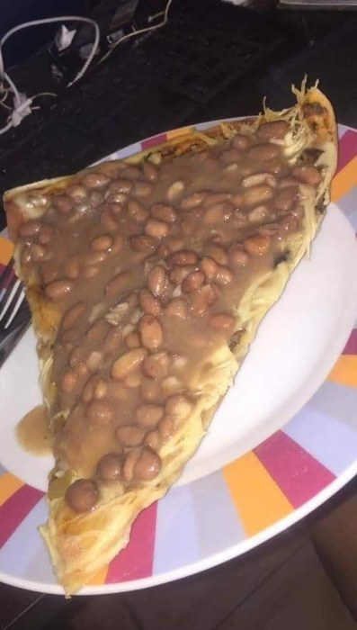

Ingredientes
| Producto | Cantidad |
|---|---|
| patatas | 4 |
| huevos | 6 |
| cebolla | 1 |
| aceite de oliva | al gusto |
| sal | al gusto |

Elaboración
- Pela y corta las patatas y la cebolla en láminas finas.
- Fríelas a fuego medio en abundante aceite hasta que estén tiernas.
- Escurre y mezcla con los huevos batidos y sal.
- Cuaja la tortilla en la sartén por ambos lados.
- Sirve templada o fría en porciones.